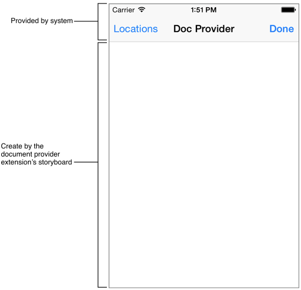

Author: Charles Zhu
Summary: ios8 app extension
1 开始
第一篇介绍了Extension的基本概念，Extension的运行周期，和containing app的数据共享等细节，第二篇介绍并实践了4种extension，而本篇就要介绍Sync和File Provider。
2 Finder Sync (OS X)
因为extension要运行在10.10的OS X上，由于没升级，所以本节就侧重“理论”了。
2.1 含义
顾名思义，就是保持本地的某些文件夹和远程的文件夹内容保持一致。它可以让用户在Finder实时察觉同步的状态并随时控制同步的进程。比如说可以在文件夹上加badge或是文字来告诉用户当前的状态，或是在Finder窗口添加工具栏方便打开监视的文件夹或强制退出同步(不知道网盘类的应用如何集成该extension呢)。因此，Finder Sync的host app只能是Finder。
Finder Sync可以：
- 注册一系列文件夹进行同步
- 当用户打开/退出上述文件夹时会收到通知
- 可以添加/移除/更新该文件夹上的badge
- 在注册的文件夹内，通过control点击内容后会弹出文本彩蛋
- 可以给Finder的工具栏添加按钮
2.2模版文件
plist文件和widget中的类似，默认的类是FIFinderSync子类，实现文件中预先生成的方法很好的解释了FinderSync的工作流程。
首先是init,
- (instancetype)init {
self = [super init];
NSLog(@"%s launched from %@ ; compiled at %s", __PRETTY_FUNCTION__, [[NSBundle mainBundle] bundlePath], __TIME__);
// Set up the directory we are syncing.
self.myFolderURL = [NSURL fileURLWithPath:@"/Users/Shared/MySyncExtension Documents"];
[FIFinderSyncController defaultController].directoryURLs = [NSSet setWithObject:self.myFolderURL];
// Set up images for our badge identifiers. For demonstration purposes, this uses off-the-shelf images.
[[FIFinderSyncController defaultController] setBadgeImage:[NSImage imageNamed: NSImageNameColorPanel] label:@"Status One" forBadgeIdentifier:@"One"];
[[FIFinderSyncController defaultController] setBadgeImage:[NSImage imageNamed: NSImageNameCaution] label:@"Status Two" forBadgeIdentifier:@"Two"];
return self;
}
初始化函数中主要做的就是注册要同步的文件夹，可以是多个。通常指定的文件夹是在containing app中操作的，因此需要用到share group来共享数据。所以，实际中会通过NSUserDefaults来读取，然后再注册。除此之外，还可以进行badge等修饰。这里badge的图片里不能有padding(我的理解就是图片的内容都要顶边)，此外还有像素的限制：
- retina屏： 12x12-320x320
- 非retina屏： 8x8-160x160
接下来就是实现一系列FIFinderSync协议：
- (void)beginObservingDirectoryAtURL:(NSURL *)url {
// The user is now seeing the container's contents.
// If they see it in more than one view at a time, we're only told once.
NSLog(@"beginObservingDirectoryAtURL:%@", url.filePathURL);
}
当用户打开同步文件夹或其子文件夹时，调用此方法，查看的文件夹路径作为url参数传入。
和打开香对应的，有关闭浏览同步文件夹的协议：
- (void)endObservingDirectoryAtURL:(NSURL *)url {
// The user is no longer seeing the container's contents.
NSLog(@"endObservingDirectoryAtURL:%@", url.filePathURL);
}
还有一个协议，当同步文件夹里的内容要显示的时候，会调用：
- (void)requestBadgeIdentifierForURL:(NSURL *)url {
NSLog(@"requestBadgeIdentifierForURL:%@", url.filePathURL);
// For demonstration purposes, this picks one of our two badges, or no badge at all, based on the filename.
NSInteger whichBadge = [url.filePathURL hash] % 3;
NSString* badgeIdentifier = @[@"", @"One", @"Two"][whichBadge];
[[FIFinderSyncController defaultController] setBadgeIdentifier:badgeIdentifier forURL:url];
}
如例子所做的那样，文件夹内的每个内容显示的时候会调用该协议，然后extension根据一些条件(比如文件的名字等)来决定是否加badge以及加哪种badge。
接下来就是菜单和工具栏相关的协议：
- (NSMenu *)menuForMenuKind:(FIMenuKind)whichMenu {
// Produce a menu for the extension.
NSMenu *menu = [[NSMenu alloc] initWithTitle:@""];
[menu addItemWithTitle:@"Example Menu Item" action:@selector(sampleAction:) keyEquivalent:@""];
return menu;
}
实现自定义的菜单就要实现该协议，根据不同的FIMenuKind,提供不同的菜单。
接下来是在Finder窗口添加自定义的工具按钮：
- (NSString *)toolbarItemName {
return @"FinderSynTest";
}
- (NSString *)toolbarItemToolTip {
return @"FinderSynTest: Click the toolbar item for a menu.";
}
- (NSImage *)toolbarItemImage {
return [NSImage imageNamed:NSImageNameCaution];
}
当用户点击按钮后，系统就会调用之前的menuForMenuKind:方法，并把FIMenuKindToolbarItemMenu类参数传入。
2.3 Finder Sync典型用例
因为同步文件夹内可以会有很多很多的内容，这时候效率就显得特别重要了。适时更新就显得尤为重要，简单的说就是lazy-load，需要用到的时候再去加载，可见的时候才有必要去更新。Finder Sync的典型运作流程：
- 当打开同步文件夹或子文件夹时，系统调用
beginObservingDirectoryAtURL: - 对于要显示的每个子内容，系统调用
requestBadgeIdentifierForURL:，在这个方法里主要做： a. 检查每个子内容的状态，然后来调用setBadgeIdentifier:forURL:，这里的状态由app自己来定义，比如：正在同步，同步出错，同步成功 b. 对于设置badge的子内容，要记录下来。 - 当关闭窗口时，调用
endObservingDirectoryAtURL:，删除所有在2.b中记录的内容，并停止检测文件夹的状态
3 Document Provider
3.1 Document Provider是什么
Document Provider充当containing app管理的文件和其他 app 之间的“中介”，该中介可以让其他app 导入或是打开文件，可以从服务器上上传/下载文件，也可以导出/移动文件到扩展的共享数据区。因此，Document Provider由2个独立的extension组成：一个是Document Picker View Controller extension(简称picker extension)，另一个则是File Provider extension(简称provider extension)。前者负责将可供使用的文件展示给用户，后者则根据用户选择的类型(指导入，打开，导出，移动等4种类型)提供相应的服务。在host app中，通过UIDocumentPickerViewController或是UIDocumentMenuViewController调用picker extension，extesnion根据实际需要把相关的文件呈现给用户，供用户选择；用户选择完毕后，有需要的话，再去运行provider extension。这里说“有需要”是因为理想情况下，Document Provider最好支持上述4种类型，但不是必须。同时，只有打开和移动操作是一定要提供provider extension的，因为导入导出操作可只与共享数据区进行数据交换：比如说只是备份文件。
需要注意的是，iCloud也“集成”了该类型的扩展，就是说如果app启用了icloud，那么可以查看icloud的文件并选择操作。启用iCloud需要在plist文件中添加类似如下的属性：
<key>NSUbiquitousContainers</key>
<dict>
<key>iCloud.com.example.MyApp</key>
<dict>
<key>NSUbiquitousContainerIsDocumentScopePublic</key>
<true/>
<key>NSUbiquitousContainerSupportedFolderLevels</key>
<string>Any</string>
<key>NSUbiquitousContainerName</key>
<string>MyApp</string>
</dict>
</dict>
3.2 picker extension
新建一个File Provider，在导航上就可以看到Xcode会提供是否要创建provider extension的选项，一并勾上，然后来观察程序创建了2个target。先看picker extension的plist文件：
<dict>
<key>NSExtensionAttributes</key>
<dict>
<key>UIDocumentPickerModes</key>
<array>
<string>UIDocumentPickerModeImport</string>
<string>UIDocumentPickerModeOpen</string>
<string>UIDocumentPickerModeExportToService</string>
<string>UIDocumentPickerModeMoveToService</string>
</array>
<key>UIDocumentPickerSupportedFileTypes</key>
<array>
<string>public.content</string>
</array>
</dict>
<key>NSExtensionMainStoryboard</key>
<string>MainInterface</string>
<key>NSExtensionPointIdentifier</key>
<string>com.apple.fileprovider-ui</string>
</dict>
键UIDocumentPickerModes设置了支持的操作类型，而UIDocumentPickerSupportedFileTypes则设置了支持的文件类型，public.content说明支持所有的文件。
再来看模版文件，可以看到picker extension的实现是继承UIDocumentPickerExtensionViewController的子类，下图是picker extension的示例界面：

顶部的Bar是系统提供的，程序内无法自定义。左边的location是切换不同的文件来源，因为iPhone上可以安装多个提供了document provider的containing app。Bar下面的部分就是可以定制的picker extension的界面，完全在UIDocumentPickerExtensionViewController中自定义。
picker extension的生命周期：
- host app弹出
UIDocumentMenuViewController - 用户选择了你的
picker extension - 初始化
UIDocumentPickerViewExtensionViewController子类 - 调用
prepareForPresentationInMode:方法，根据UIDocumentPickerMode，展示不同的界面 - 此时，extension的界面已经在host app中展示好
- 当用户选择后，extension做相应的操作，然后必须调用
dismissGrantingAccessToURL:方法推出界面，并把文件的URL作为参数传递给host app，以便host app执行代理：-[UIDocumentPickerViewControllerDelegate documentPicker:didPickDocumentAtURL:] UIDocumentPickerExtensionViewController消失
由此可见，实现picker extension的关键就是重载prepareForPresentationInMode:以及调用dismissGrantingAccessToURL:。前者是负责界面，后者是负责用户操作的响应。前者主要关心不同类型的界面展示，比如导出操作和打开不一样，肯定要有一个导出场所。其他的需求例如是只显示支持的文件类型还是显示所有类型但标记不支持的文件类型等，也是在prepareForPresentationInMode:中实现。而相应的，以及调用dismissGrantingAccessToURL就是退出extension的必须，这个只是调用而不用重载。传递的URL参数代表用户选中的文件类型。根据不同的操作类型，URL参数有不同的要求：
- 导入：本地文件类型。如果选择的是远程服务器上的文件，那么需要先下载到本地方能调用dismiss
- 打开：如果指定的文件不存在，
provider extension会去创建。该地址必须是位于provider extension属性documentStorageURL指定的文件夹路径下面 - 导出：只有
picker extension可以访问的URL，系统会在该URL下复制一份文件并返回给host app，表明导出操作成功。但是，host app无法通过该URL访问文件 - 移动：和打开类型一样，位于
documentStorageURL下面，系统会将文件移动到该URL，并把URL返回给host app，但此时host app可以访问。
此外，如果涉及到用户授权，可以在extension中实现，也可以使用通知的方式在containing app中实现。
3.3 provider extension
如果picker提供打开和导出功能，那么就一定要实现provider extension。provider可以在host app之外打开/移动文件，可以让host app下载文件。
对于远程未下载的文件，provider extension是用placeholder代替，通过fileCoordinator实现读写。文件的变化会以通知的方式传递给extension，以便作出相应的变化。
接下来还是先看plist文件：
<key>NSExtension</key>
<dict>
<key>NSExtensionAttributes</key>
<key>NSExtensionFileProviderDocumentGroup</key>
<string>com.apple.devpubs</string>
<key>NSExtensionPointIdentifier</key>
<string>com.apple.fileprovider-nonui</string>
<key>NSExtensionPrincipalClass</key>
<string>FileProvider</string>
</dict>
NSExtensionFileProviderDocumentGroup定义了可以访问的组，该值也同样在entitle文件中声明：
<key>com.apple.security.application-groups</key>
<array>
<string>com.apple.devpubs</string>
</array>
紧接着看代码，实现部分是NSFileProviderExtension的子类，该类的头文件中着重注明了2个类只能调用不需要重载：
+ (BOOL)writePlaceholderAtURL:(NSURL *)placeholderURL withMetadata:(NSDictionary *)metadata error:(NSError **)error;
+ (NSURL *)placeholderURLForURL:(NSURL *)url;
主要作用是为未下载的文件创建placeholder，metadata通常包含文件大小，名字以及缩略图。
接下来是必须重载的方法，模版文件中主要有：
- (void)providePlaceholderAtURL:(NSURL *)url completionHandler:(void (^)(NSError *error))completionHandler {
// Should call + writePlaceholderAtURL:withMetadata:error: with the placeholder URL, then call the completion handler with the error if applicable.
NSString* fileName = [url lastPathComponent];
NSURL *placeholderURL = [NSFileProviderExtension placeholderURLForURL:[self.documentStorageURL URLByAppendingPathComponent:fileName]];
NSUInteger fileSize = 0;
// TODO: get file size for file at <url> from model
[self.fileCoordinator coordinateWritingItemAtURL:placeholderURL options:0 error:NULL byAccessor:^(NSURL *newURL) {
NSDictionary* metadata = @{ NSURLFileSizeKey : @(fileSize)};
[NSFileProviderExtension writePlaceholderAtURL:placeholderURL withMetadata:metadata error:NULL];
}];
if (completionHandler) {
completionHandler(nil);
}
}
- (void)startProvidingItemAtURL:(NSURL *)url completionHandler:(void (^)(NSError *))completionHandler {
// Should ensure that the actual file is in the position returned by URLForItemWithIdentifier:, then call the completion handler
NSError* error = nil;
__block NSError* fileError = nil;
NSData * fileData = [NSData data];
// TODO: get the contents of file at <url> from model
[self.fileCoordinator coordinateWritingItemAtURL:url options:0 error:&error byAccessor:^(NSURL *newURL) {
[fileData writeToURL:newURL options:0 error:&fileError];
}];
if (error!=nil) {
completionHandler(error);
} else {
completionHandler(fileError);
}
}
当文件开始读取的时候，上述2个方法都会被触发。触发的先后视情况而定。和iCloud一样，操作文件是使用NSFileCoordinator。对于未下载的情形，第一个方法首先执行，在该方法中首先创建placeholder，然后调用coordinate方法写文件，最后务必调用completionHandler。第二个方法执行的内容和第一个差不多，只是不需要创建placeholder，所以这里要注意确认url指定的路径下，文件是否存在。
接下来就是文件有变化时，收到的通知：
- (void)itemChangedAtURL:(NSURL *)url {
// Called at some point after the file has changed; the provider may then trigger an upload
// TODO: mark file at <url> as needing an update in the model; kick off update process
NSLog(@"Item changed at URL %@", url);
}
在这里，需要自行设计，文件变化后尤其是产生冲突后的处理。
最后一个就是：
- (void)stopProvidingItemAtURL:(NSURL *)url {
// Called after the last claim to the file has been released. At this point, it is safe for the file provider to remove the content file.
// Care should be taken that the corresponding placeholder file stays behind after the content file has been deleted.
[self.fileCoordinator coordinateWritingItemAtURL:url options:NSFileCoordinatorWritingForDeleting error:NULL byAccessor:^(NSURL *newURL) {
[[NSFileManager defaultManager] removeItemAtURL:newURL error:NULL];
}];
[self providePlaceholderAtURL:url completionHandler:NULL];
}
该方法是系统检测到没有进程调用该文件时触发的，这里可以把文件从共享区域中删除以节省空间。 另外还有4个方法可以重载：
// An identifier unique to this provider.
// When modifying the files stored in the directory returned by documentStorageURL, you should pass this identifier
// to your file coordinator's setPurposeIdentifier: method.
// By default, this returns the bundle identifier of the application containing your extension. You need to make sure to use the same identifier in your containing app.
- (NSString *)providerIdentifier;
// The root URL for provided documents. This URL must be writable from your app extension, and must only be used for the extension's files or their placeholders.
- (NSURL *)documentStorageURL;
// Should return the URL corresponding to a specific identifier. Fail if it's not a subpath of documentStorageURL.
// This is a static mapping; each identifier must always return a path corresponding to the same file.
// By default, this returns the path relative to the path returned by documentStorageURL.
- (NSURL *)URLForItemWithPersistentIdentifier:(NSString *)identifier;
- (NSString *)persistentIdentifierForItemAtURL:(NSURL *)url;
但是因为通常情况下，重载这些方法会影响到plist和entitlement中的设置，所以一般情况下也可以认为是不需要重载的。
需要说明的是，文档中指出如果在8.0上使用了iCloud Drive，那么访问文件需要使用UIDocument或是NSFileProviderExtension，而不要使用NSFileCoordinator。
最后WWDC2014中有一个示例，可以下载后研究下。
End
以上介绍了Finder Sync和File Provider的，还剩下Custom Keyboard，下文完结。